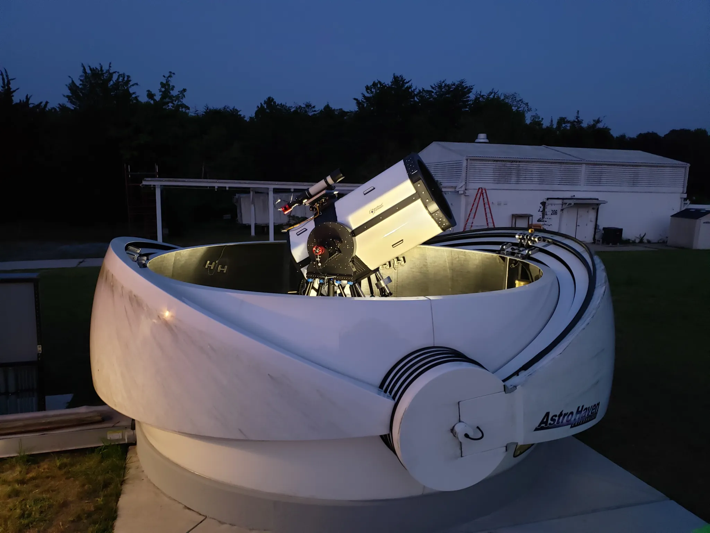

ENG
ESP


Editor’s note, Jan. 16, 2024: This article has been updated to clarify that the Low-Cost Optical Terminal is a pre-production prototype ground station, which may be used for Orion Artemis II Optical Communications System demonstrations.
NASA is working with private industry partners and small businesses under Artemis to produce scalable, affordable, and advanced laser communications systems that could enable greater exploration and discovery beyond Earth for the benefit of all.
Laser, or optical, communications provide missions with increased data rates – meaning that missions using laser technology can send and receive more information in a single transmission compared with those using traditional radio waves. When a spacecraft uses laser communications to send information, infrared light packs the data into tighter waves so ground stations on Earth can receive more data at once. Laser communications systems can provide 10 to 100 times higher data rates than the radio systems used by space missions today.
As science instruments evolve to capture high-definition data, missions will need expedited ways to transmit information to Earth. It would take roughly nine weeks to transmit a complete map of Mars back to Earth with current radio frequency systems. With lasers, it would only take about nine days.
Through a small business collaboration, NASA’s Space Communications and Navigation (SCaN) Program funded the successful development of a new piece of laser technology. Developed by Fibertek Inc., the Basestation Optical Laser Terminal is a four-channel laser unit that could enable the transmission of high-power communications to the Moon during the Artemis II flight test. Artemis II will send a crew of four astronauts on a journey around the Moon and bring them back safely, paving the way for future long-term human exploration missions to the lunar surface, and eventually Mars.
Known as the Orion Artemis II Optical Communications System (O2O), the Artemis II demonstration will use laser communications to transmit high-resolution images and video of the lunar region to two primary ground stations, located in White Sands, New Mexico, and Table Mountain, California. The Low-Cost Optical Terminal (LCOT), located at NASA’s Goddard Space Flight Center in Greenbelt, Maryland, is a pre-production prototype ground station that may also be used for demonstrations with O2O.
In September 2023, Fibertek’s terminal was integrated into LCOT and successfully tested. The prototype ground station is a telescope around 27 inches in diameter made of mostly commercial off-the-shelf parts. Using commercial components is more cost-effective than developing custom hardware and can also make an architecture scalable for replication. The Low-Cost Optical Terminal will serve as a template for future ground stations.
“Laser communications, focusing on direct-to-Earth links, is a maturing technology that is essential for NASA to meet its future communications capacity and navigation needs. As we mature any technology, establishing and supporting a healthy domestic supply chain is vital,” said Dr. Jason Mitchell, director of SCaN’s Advanced Communications and Navigation Technologies Division at NASA Headquarters in Washington. “American small businesses play a key role in that chain, and our engagement with Fibertek Inc. is an example of this process.”
NASA’s Glenn Research Center in Cleveland and NASA’s Small Business Innovation Research Program funded the development of the Basestation Optical Laser Terminal. Through America’s Seed Fund, NASA provides small businesses with early-stage federal funding for innovative technologies to advance agency missions.
 The Low-Cost Optical Terminal at NASA’s Goddard Space Flight Center in Greenbelt, Maryland, uses commercial off-the-shelf or slightly modified hardware to reduce the expense of implementing laser communications technology.“NASA’s investment in the development of this technology is a win-win-win for the agency and Fibertek, as well as any other future system integrators or developers that want to use laser communications technology,” said Nang Pham, SCaN small business project manager at NASA Glenn.
As NASA prepares to send human’s back to the Moon for the first time in 50 years, new laser technologies will enable more efficient laser communications systems, expanding humanity’s knowledge of our Moon and what lies beyond.